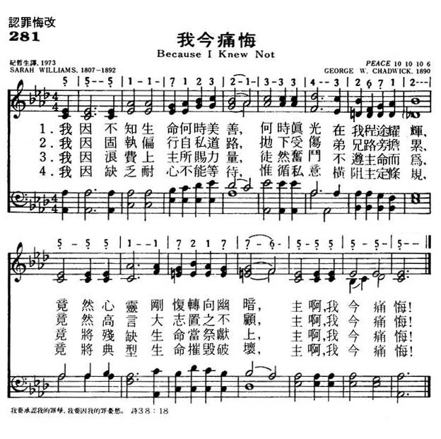
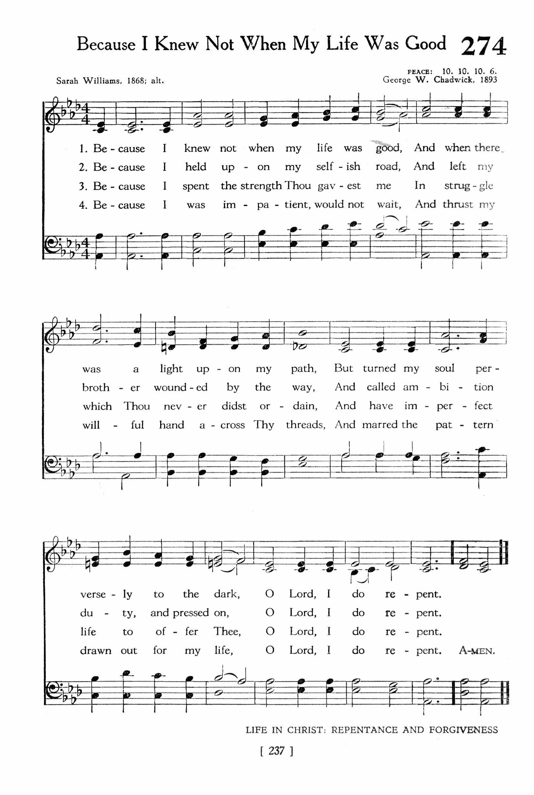
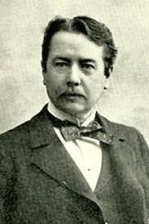

|
|
颂主新歌 |
|
1 Because I knew not when my life was good, 2 Because I held upon niy selfish road, 3 Because I spent the strength Thou gavest me 4 Because I was impatient, would not wait, Amen. |
1.我因不知生命何时美善，
|
|
https://www.mred365.cn/szxg/7284.html   |
|
|
|
|

Because I Knew Not When My Life was Good (Peace) https://youtu.be/6QkYPEhZrpI
| Text: | Because I Knew Not When My Life Was Good |
| Author: | Sarah Williams |
| Tune: | PEACE |
| Composer: | George W. Chadwick |
| Short Name: | George W. Chadwick |
| Full Name: | Chadwick, G. W. (George Whitefield), 1854-1931 |
| Birth Year: | 1854 |
| Death Year: | 1931 |

Educator, administrator, organist, conductor, and principal composer of the Second New England School, whose members also included John Knowles Paine, Horatio Parker, and Amy Marcy Beach, George W. Chadwick taught several generations of American musicians at the New England Conservatory, and came to be regarded as the standard bearer of the Yankee academic tradition in music.
Born in Lowell, MA. on November 13, 1854, Chadwick studied organ with his older brother and used his earnings as an organist to finance the musical studies which his father opposed. After leaving high school in 1872, he clerked for a brief time in his father's insurance office while studying with Dudley Buck and Eugene Thayer at the New England Conservatory. Upon graduation in 1876 he accepted an appointment as a music instructor at Mt. Olivet College in Michigan and founded the Music Teachers National Association. In 1877 Chadwick embarked on the pilgrimage which was considered de rigeur for American musicians; he sailed for Germany to study in Leipzig and Munich with such famous pedagogues as Rheinberger. His RIP VAN WINKLE OVERTURE, composed abroad to an American theme, won him some early notice, and before returning to the States in 1880, he tasted a bit of the bohemian life by tramping the Continent with a group of avant garde artists and writers called the Duvenek Boys.
New England Conservatory
From 1877 to his appointment to the Directorship of the New England
Conservatory in 1897, Chadwick built his career as a Boston teacher,
organist, and composer. Among his celebrated pupils were Horatio Parker,
who, in turn taught Charles Ives, Daniel Gregory Mason, and Frederick
Shepherd Converse. Chadwick's compositional style has been dubbed "Boston
Classicism." Though there is a distinct academic foundation to his music,
his works also reflect a certain Yankee bluntness and retain the hints of
his colorful vagabond days. In his mature period to which his powerful
verismo opera, THE PADRONE, and his lyric drama, JUDITH, belong, Chadwick's
music makes significant strides in freeing the American idiom from the
German conservatory style. Sensitive, also, to indigenous influences,
Chadwick made use of African-American song, Anglo-American psalmody, and
folk idioms in his symphonic compositions. His 137 songs for solo voice and
piano reflect a deep-seated interest in contemporary poetry in a Romantic
vein. Among his best known settings are two cycles by Boston poet Arlo
Bates: A FLOWER CYCLE and TOLD IN THE GATE.
--www.pbs.org/wnet/ihas/composer/chadwick.html
| Short Name: | Sarah Williams |
| Full Name: | Williams, Sarah, 1838-1868 |
| Birth Year (est.): | 1838 |
| Death Year: | 1868 |
Williams, Sarah, only child of Robert Williams, born in London c. 1838, and died April 25, 1868. She contributed to the periodicals and published Rainbows in Springtide, 1866, and Twilight Hours, 1868. The hymn “Because I knew not when my life was good" (Repentanc), in Horder's Worship Song, 1905, is from her Twilight Hours, 1868, p. 150, st. iv., v., vii. being omitted.
--John Julian, Dictionary of Hymnology, New Supplement (1907)
Tune Information
| Title: | PEACE (Chadwick) |
| Composer: | George W. Chadwick (1893) |
| Meter: | 10.10.10.6 |
| Incipit: | 55511 71232 13334 |
| Copyright: | Public Domain |